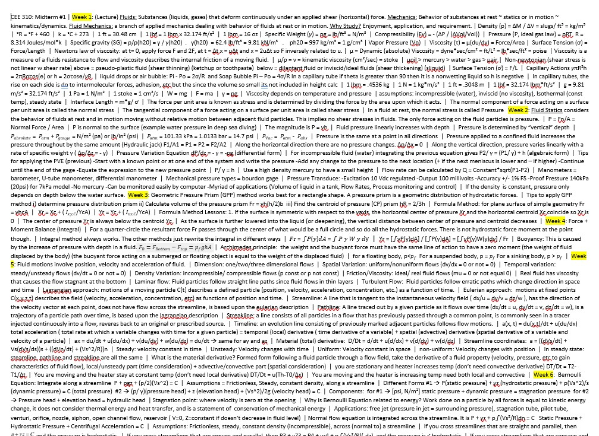
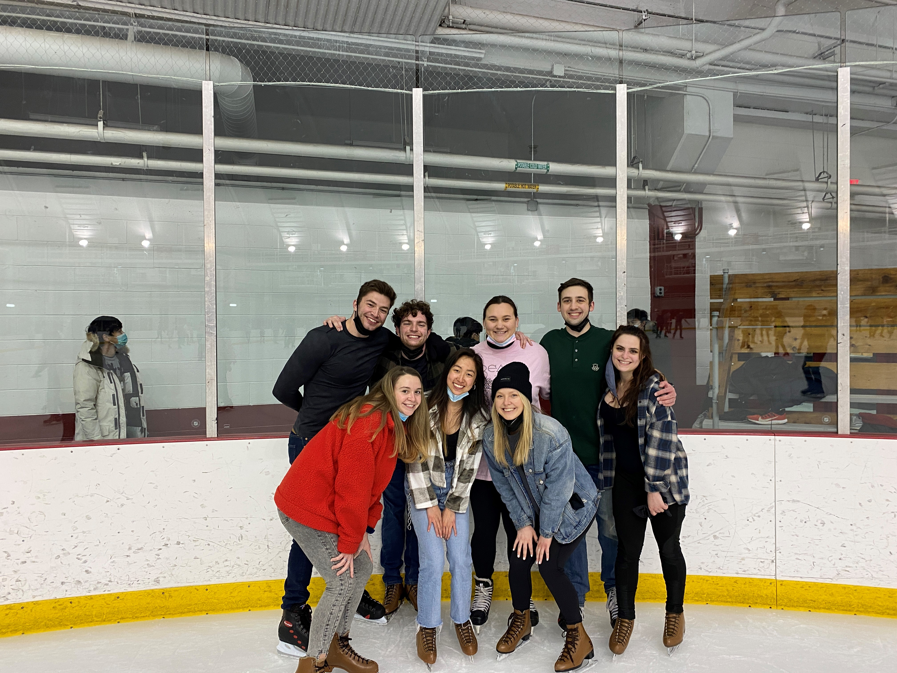
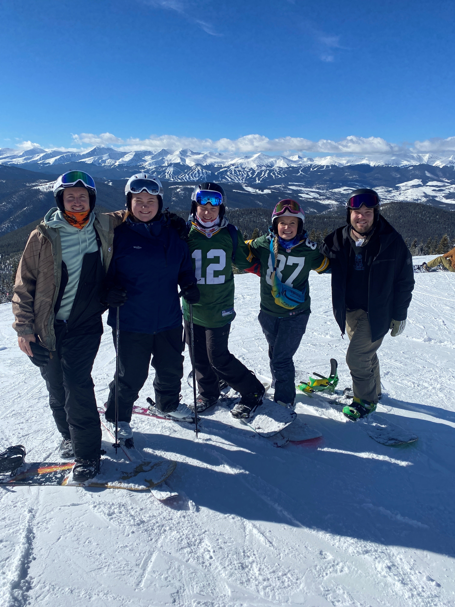

Fluid Mechanics Midterm (3/8/2022)

"Cheat Sheet" I made to use on the exam
This week, I took the first midterm for my fluid mechanics class. The test involved pressure & pressure equations, fluid motions, and bernoulli's equation. It was a pretty difficult and I spent about 7 hours everyday for 5 days leading up to the exam studying. I am happy it is over, but anxious about the results. Hopefully it will be graded soon. Now, I am on vacation mode as I am about to embark on a 12 day trip to Florida to visit my parents who live there in the winter months. Here are some key takeaways I have for the next midterm:
- Work harder on the homework during the week it is assigned to minimize extra work to relearn before the midterm
- Pay more attention in lecture and make more detailed notes
- Actually come to lab more prepared and ready to learn
- Spend more time on the weekends reviewing previous material
Student Skate night (2/26/2022)

Friends from college
Student skate night was a blast! Us tired students, in the midst of midterms, took a break from studying to spend some quality time together and make unforgettable college memories. I am a former hockey player, so skating with friends was an enjoyable experience. Now that the fun is over, it's time to hit the books and prepare for the next round of midterms.
A break from class (1/29/2022)

Sibling's Weekend 2022
Every year, UW-Madison gives us a 1 month long break between fall and spring semester. This year I took this time off as an opportunity to visit my siblings, who live in Colorado, and get a breath of fresh air. We skied Vail and Keystone and enjoyed each others company alongside the beautiful scenery. It was a nice break from class and allowed to me to connect back with nature and rediscover by passion for the outdoors.